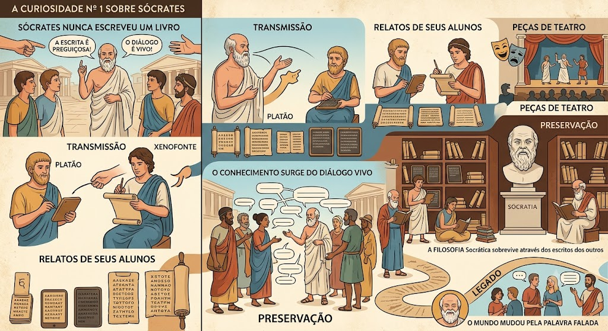

Conheça a trajetória de Sócrates
Por: Wesley Sales
Um cara bem bagua
Por: Wesley Sales

1 Tudo o que sabemos sobre Sócrates vem dos relatos de seus alunos (principalmente Platão e Xenofonte) e de peças de teatro da época. Ele acreditava que a escrita tornava a memória preguiçosa e que o verdadeiro conhecimento surgia apenas do diálogo vivo.